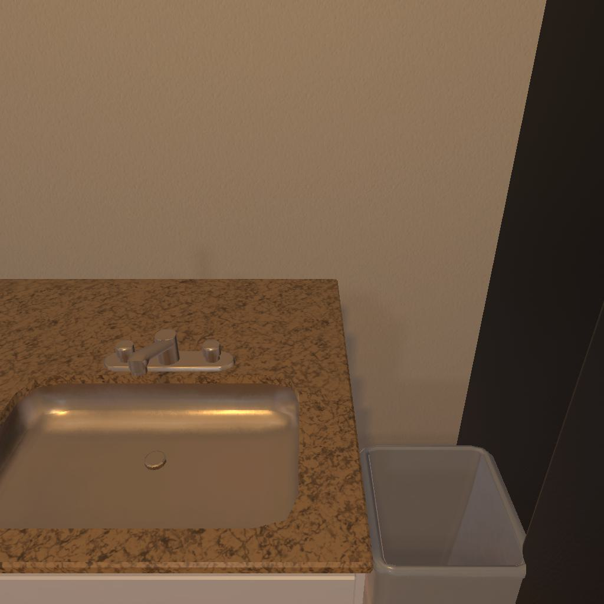
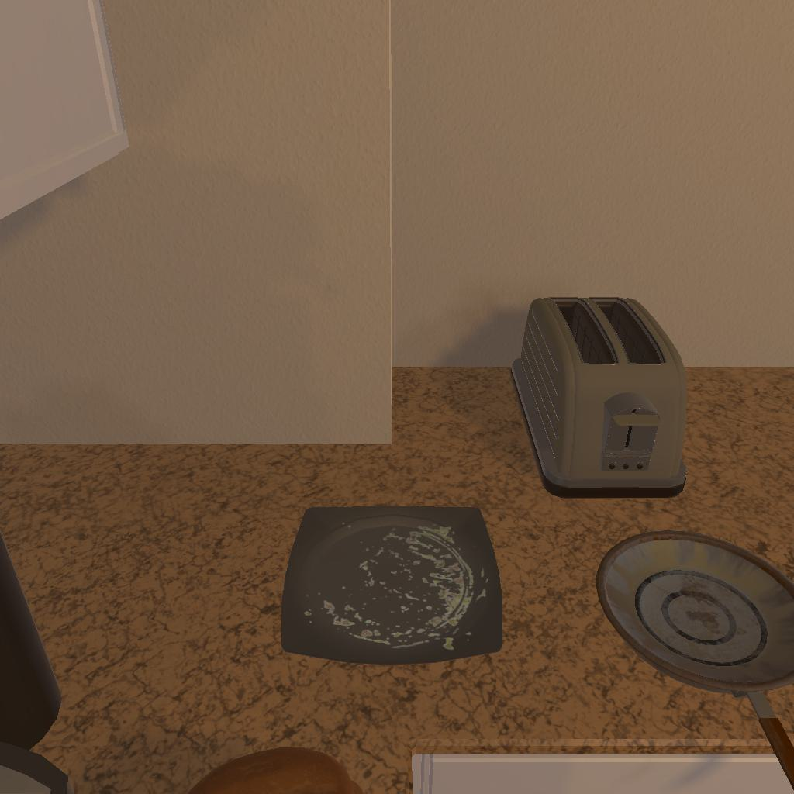

---------------------------------------------------------task: 13---------------------------------------------------------
--------------------------------------------------------------------------------------------------------------------------------------------------------------------
--------------------------------------------------------------------------------------------------------------------------------------------------------------------
Step:--------------------------------------------------------------------------10-------------------------------------------------------------------------------
----------------------------------------
VLM Prompt:
Image1:
Image2:
Image3:
**Instruction**
1. Analyze the provided images to identify all visible household objects and compare the difference between images (e.h. whether the object is opened or not and taken on hand or not), focusing on those relevant to the task description "put a clean tomato in garbagecan."
2. Use the analysis of images and the task hint "The agent must find an object of the desired type, pick it up, go to a sink or a basin, clean the object with a sink or basin, and then find the correct location to place it and put it down there. The agent does not need to use soap bottle or faucet to clean the object, and the agent just needs to do action that is "clean the object with the sink or sink basin"." to answer the question: what is the most reasonable action in the choices for the task description "put a clean tomato in garbagecan"?
3. Decide and write the answer using the template: The answer is: (i): , where i is the real number. If there is no desired object in images, search every place based on **Initial Observation** to find the object. And if no one is exactly correct, choose a similar answer.
**Initial Observation**
You are in the middle of a room. Looking quickly around you, you can see countertop (1-2), cabinet (1-11), garbagecan (1), toaster (1), sinkbasin (1), fridge (1), sink (1), microwave (1), drawer (1-3), stoveburner (1-4), coffeemachine (1), diningtable (1)
**Answer Choices**
(1): go to cabinet 1
(2): go to cabinet 2
(3): go to cabinet 3
(4): go to garbagecan 1
(5): go to cabinet 4
(6): go to toaster 1
(7): go to sinkbasin 1
(8): go to fridge 1
(9): go to cabinet 5
(10): go to microwave 1
(11): go to countertop 2
(12): go to cabinet 6
(13): go to cabinet 7
(14): go to drawer 1
(15): go to stoveburner 1
(16): go to stoveburner 2
(17): go to cabinet 8
(18): go to drawer 2
(19): go to stoveburner 3
(20): go to stoveburner 4
(21): go to coffeemachine 1
(22): go to cabinet 9
(23): go to cabinet 10
(24): go to cabinet 11
(25): go to diningtable 1
(26): go to drawer 3
(27): take plate 1 from countertop 1
(28): take pan 1 from countertop 1
(29): take bread 1 from countertop 1
(30): examine countertop 1
**Answer**
Let's think step by step by following the instructions.
----------------------------------------
----------------------------------------
Original Response:
First, we analyze the provided images to identify all visible household objects:
Image 1 and Image 2:
- Sinkbasin with a faucet
- Garbagecan
Image 3:
- Toaster
- Dirty plate on the countertop
- Frying pan on the countertop
There are no tomatoes visible in any of the images provided.
Next, we refer to the task description "put a clean tomato in garbagecan." For this task, the agent must find a tomato, clean it, and then place it in the garbagecan. Since there are no tomatoes visible on the countertop or any other visible area in the images, the agent needs to search for a tomato.
According to the Initial Observation, possible locations for a tomato could be the fridge, cabinet, or drawer. We can rule out the toaster, sinkbasin, garbagecan, microwave, stoveburner, coffeemachine, and diningtable as these are unlikely places to store a tomato.
Considering the task hint, the agent does not need to use a soap bottle or faucet; they just need to perform the action of cleaning the object with the sink or sink basin. However, since the tomato is not yet found, the cleaning action cannot be performed.
Based on the analysis, the most reasonable action from the choices to find the tomato would be to check the fridge, as it is a common place to store fresh produce like tomatoes.
The answer is: (8): go to fridge 1
----------------------------------------
----------------------------------------
>>> Refine Original VLM Response and Get Pure Action: go to fridge 1
----------------------------------------
-----------------------------------------------------------------
Running time: 11.10991096496582 seconds
Total Money: 7.297770000000007
-----------------------------------------------------------------
-----------------------------------------------------------------
Text Observation:You arrive at loc 8. The fridge 1 is open. On the fridge 1, you see a bread 2, a cup 1, and a cup 2.
-----------------------------------------------------------------
UNSUCCEED